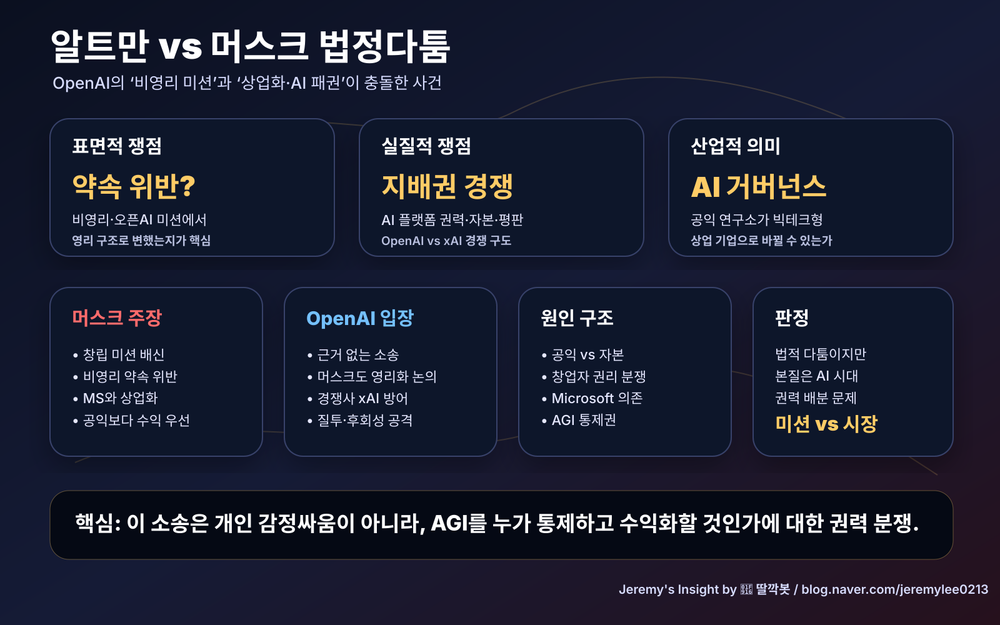

260502 샘 알트만과 일론 머스크 법정다툼 원인 분석 보고서
핵심 결론
샘 알트만과 일론 머스크의 법정다툼은 단순한 감정싸움이 아니라 OpenAI의 창립 미션, 영리화, Microsoft와의 결합, AGI 통제권이 충돌한 사건입니다. 머스크는 OpenAI가 “인류를 위한 비영리 AI 연구소”라는 약속을 버리고 상업화됐다고 주장합니다. 반대로 OpenAI와 알트만 측은 머스크가 회사를 떠난 뒤 경쟁사 xAI를 키우면서 OpenAI의 성장을 방해하려는 소송이라고 반박합니다.
사건의 배경
OpenAI는 2015년 일론 머스크, 샘 알트만, 그렉 브록먼 등이 참여해 출발했습니다. 당시 명분은 강력한 AI를 소수 기업이나 국가가 독점하지 않도록, 인류 전체에 이익이 되는 방향으로 개발하자는 것이었습니다.
하지만 대규모 AI 모델 개발에는 막대한 연산 자원과 자본이 필요했습니다. OpenAI는 이후 제한적 영리 구조를 만들고 Microsoft로부터 대규모 투자를 받았습니다. 이 지점에서 머스크와 알트만의 인식 차이가 법적 분쟁으로 폭발했습니다.
머스크 측 주장
머스크 측 주장은 크게 네 가지입니다.
| 주장 | 의미 |
|---|---|
| 창립 미션 위반 | OpenAI가 비영리·공익 목적을 버렸다는 주장 |
| 영리화 문제 | Microsoft와의 협력 및 영리 자회사 구조가 본래 약속과 다르다는 주장 |
| 신뢰 위반 | 알트만·브록먼이 머스크의 자금과 신뢰를 이용했다는 주장 |
| 구제 요구 | 알트만의 영향력 제한, OpenAI 비영리 부문에 대한 금전 지급 등 |
핵심은 “OpenAI가 Open하지 않게 됐다”는 문제 제기입니다.
알트만/OpenAI 측 반박
OpenAI 측은 머스크의 주장을 “근거 없는 경쟁사 견제”에 가깝게 봅니다.
| 반박 | 의미 |
|---|---|
| 머스크도 영리 구조 필요성을 알았다 | 대규모 AI 개발에는 자본 조달이 필수였다는 논리 |
| 기부이지 투자 아님 | 머스크의 초기 자금은 회수 가능한 투자라기보다 비영리 기부였다는 입장 |
| xAI 이해상충 | 머스크가 2023년 xAI를 세운 뒤 OpenAI를 견제하고 있다는 주장 |
| 질투·후회 프레임 | OpenAI 성장 이후 뒤늦게 통제권을 문제 삼는다는 주장 |
즉 OpenAI 측은 “머스크가 통제권을 잃은 뒤 법을 이용해 경쟁사를 흔든다”고 보는 구조입니다.
진짜 원인 1: 비영리 이상과 AI 개발 비용의 충돌
초기 OpenAI의 이상은 공익적이었지만, GPT급 모델을 만들려면 데이터센터, GPU, 연구 인력, 클라우드 인프라에 천문학적 비용이 듭니다. 비영리 기부만으로는 글로벌 AI 경쟁을 버티기 어렵습니다.
따라서 OpenAI는 상업화로 이동했고, 머스크는 이를 배신으로 봤습니다. 이 사건의 가장 깊은 원인은 AI 안전 이상주의와 현실 자본주의의 충돌입니다.
진짜 원인 2: AGI 통제권 경쟁
법정 문서의 언어는 계약, 신뢰, 기부, 이사회 구조지만, 실제 핵심은 AGI가 누구의 손에 있어야 하느냐입니다. OpenAI는 세계 AI 플랫폼의 중심이 되었고, Microsoft는 핵심 파트너가 됐습니다. 머스크 입장에서는 자신이 공동 창립한 조직이 자신 없이 세계 AI 권력의 중심이 된 셈입니다.
진짜 원인 3: xAI와 OpenAI의 경쟁
머스크는 2023년 xAI를 설립했습니다. 이후 OpenAI와 xAI는 인재, 자본, 데이터센터, AI 모델, 플랫폼 주도권을 두고 경쟁합니다. 법정다툼은 과거의 창립 미션 문제이면서 동시에 현재의 AI 시장 경쟁 전략이기도 합니다.
산업적 의미
이 소송은 OpenAI 한 회사의 문제가 아닙니다. 앞으로 AI 연구소가 공익 미션을 내걸고 출발한 뒤, 막대한 자본을 받으며 영리화할 때 어떤 책임을 져야 하는지에 대한 선례가 될 수 있습니다.
특히 세 가지 질문을 남깁니다.
1. AGI 개발 기업은 비영리 미션을 어디까지 지켜야 하는가? 2. 막대한 자본이 필요한 AI 개발에서 공익성과 수익성은 양립 가능한가? 3. 창립자의 의도와 현재 이사회의 판단 중 무엇이 우선인가?
최종 판단
이 다툼의 표면은 “약속을 어겼는가”이지만, 본질은 AI 시대의 권력 배분 문제입니다. 머스크는 OpenAI가 공익 미션에서 벗어나 Microsoft 중심의 상업 기업이 됐다고 공격합니다. 알트만과 OpenAI는 머스크가 경쟁사 xAI를 키우기 위해 소송을 이용한다고 방어합니다.
20년차 산업 분석 관점에서 보면, 양쪽 모두 일정 부분 설득력이 있습니다. OpenAI가 창립 당시의 이상과 달라진 것은 사실에 가깝고, 동시에 오늘날 프런티어 AI를 만들려면 대규모 자본 없이는 불가능하다는 것도 현실입니다. 결국 이 사건은 미션을 앞세운 AI 조직이 시장의 힘을 만났을 때 어디까지 변해도 되는가를 묻는 싸움입니다.
참고 출처
- AP News, “AI showdown: Musk and Altman go to trial in fight over OpenAI's beginnings”, 2026
- CNBC, “Musk v. Altman heads to court next week. Here's what's at stake”, 2026
- The Guardian, “Elon Musk and Sam Altman face off in court over OpenAI’s founding mission”, 2026
Jeremy's Insight by 🤖 딸깍봇